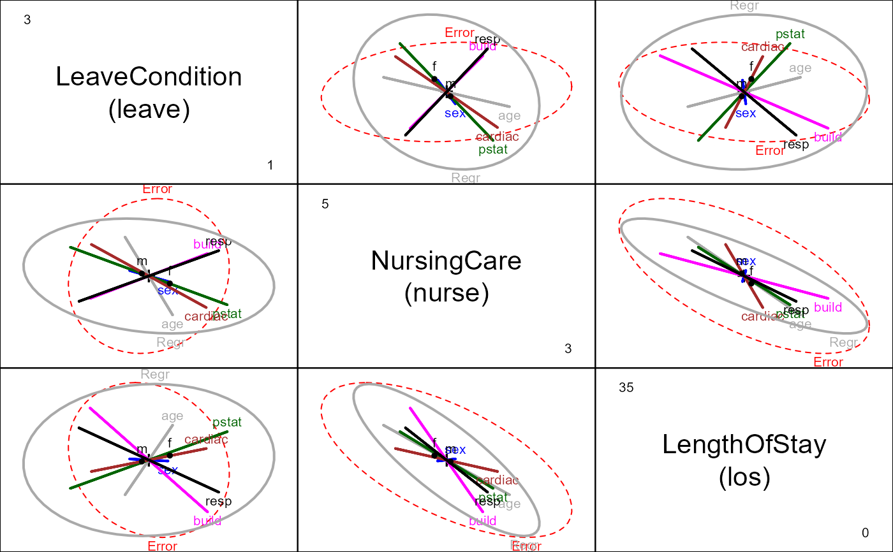
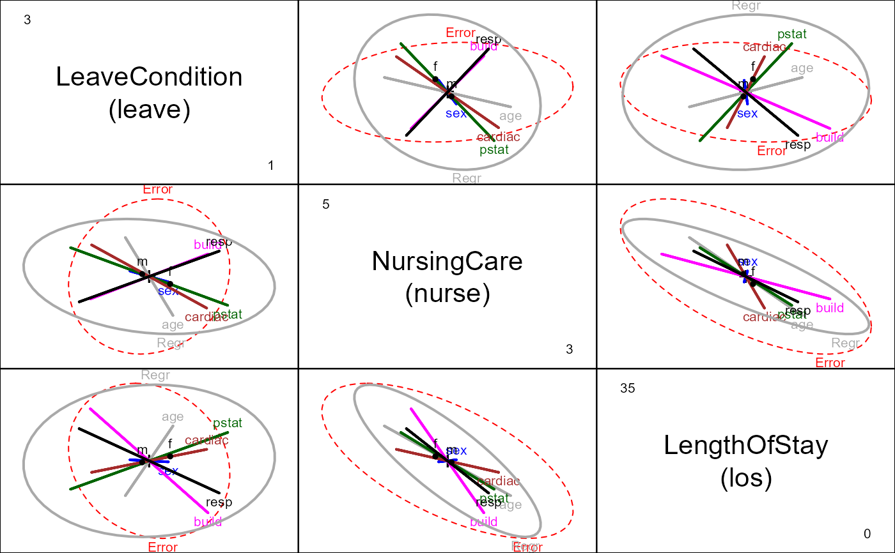

Recovery from Elective Herniorrhaphy
Hernior.RdA data set on measures of post-operative recovery of 32 patients undergoing an elective herniorrhaphy operation, in relation to pre-operative measures.
data(Hernior)Format
A data frame with 32 observations on the following 9 variables.
agepatient age
sexpatient sex, a factor with levels
fmpstatphysical status (ignoring that associated with the operation). A 1-5 scale, with 1=perfect health, 5=very poor health.
buildbody build, a 1-5 scale, with 1=emaciated, 2=thin, 3=average, 4=fat, 5=obese.
cardiacpreoperative complications with heart, 1-4 scale, with 1=none, 2=mild, 3=moderate, 4=severe.
resppreoperative complications with respiration, 1-4 scale, with 1=none, 2=mild, 3=moderate, 4=severe.
leavecondition upon leaving the recovery room, a 1-4 scale, with 1=routine recovery, 2=intensive care for observation overnight, 3=intensive care, with moderate care required, 4=intensive care, with moderate care required.
loslength of stay in hospital after operation (days)
nurselevel of nursing required one week after operation, a 1-5 scale, with 1=intense, 2=heavy, 3=moderate, 4=light, 5=none (?); see Details
Details
leave, nurse and los are outcome measures;
the remaining variables are potential predictors of recovery status.
The variable nurse is recorded as 1-4, with remaining (20) entries entered as
"-" in both sources. It is not clear whether this means "none" or NA.
The former interpretation was used in constructing the R data frame,
so nurse==5 for these observations. Using
Hernior$nurse[Hernior$nurse==5] <- NA would change to the other
interpretation, but render nurse useless in a multivariate analysis.
The ordinal predictors could instead be treated as factors, and there are also potential interactions to be explored.
Source
Mosteller, F. and Tukey, J. W. (1977), Data analysis and regression, Reading, MA: Addison-Wesley. Data Exhibit 8, 567-568. Their source: A study by B. McPeek and J. P. Gilbert of the Harvard Anesthesia Center.
References
Hand, D. J., Daly, F., Lunn, A. D., McConway, K. J. and Ostrowski, E. (1994), A Handbook of Small Data Sets, Number 484, 390-391.
Examples
str(Hernior)
#> 'data.frame': 32 obs. of 9 variables:
#> $ age : int 78 60 68 62 76 76 64 74 68 79 ...
#> $ sex : Factor w/ 2 levels "f","m": 2 2 2 2 2 2 2 1 2 1 ...
#> $ pstat : int 2 2 2 3 3 1 1 2 3 2 ...
#> $ build : int 3 3 3 5 4 3 2 3 4 2 ...
#> $ cardiac: int 1 2 1 3 3 1 1 2 2 1 ...
#> $ resp : int 1 2 1 1 2 1 2 2 1 1 ...
#> $ leave : int 2 2 1 1 2 1 1 1 1 2 ...
#> $ los : int 9 4 7 35 9 7 5 16 7 11 ...
#> $ nurse : num 3 5 4 3 4 5 5 3 5 3 ...
Hern.mod <- lm(cbind(leave, nurse, los) ~
age + sex + pstat + build + cardiac + resp, data=Hernior)
Anova(Hern.mod, test="Roy") # actually, all tests are identical
#>
#> Type II MANOVA Tests: Roy test statistic
#> Df test stat approx F num Df den Df Pr(>F)
#> age 1 0.16620 1.2742 3 23 0.30668
#> sex 1 0.02681 0.2055 3 23 0.89150
#> pstat 1 0.50028 3.8355 3 23 0.02309 *
#> build 1 0.34506 2.6455 3 23 0.07318 .
#> cardiac 1 0.29507 2.2622 3 23 0.10820
#> resp 1 0.32969 2.5277 3 23 0.08245 .
#> ---
#> Signif. codes: 0 '***' 0.001 '**' 0.01 '*' 0.05 '.' 0.1 ' ' 1
# test overall regression
print(linearHypothesis(Hern.mod, c("age", "sexm", "pstat", "build", "cardiac", "resp")), SSP=FALSE)
#>
#> Multivariate Tests:
#> Df test stat approx F num Df den Df Pr(>F)
#> Pillai 6 1.1019849 2.419161 18 75.00000 0.00413563 **
#> Wilks 6 0.2173439 2.604648 18 65.53911 0.00252395 **
#> Hotelling-Lawley 6 2.2679660 2.729959 18 65.00000 0.00162850 **
#> Roy 6 1.5543375 6.476406 6 25.00000 0.00032318 ***
#> ---
#> Signif. codes: 0 '***' 0.001 '**' 0.01 '*' 0.05 '.' 0.1 ' ' 1
# joint test of age, sex & caridac
print(linearHypothesis(Hern.mod, c("age", "sexm", "cardiac")), SSP=FALSE)
#>
#> Multivariate Tests:
#> Df test stat approx F num Df den Df Pr(>F)
#> Pillai 3 0.3826974 1.218485 9 75.00000 0.296709
#> Wilks 3 0.6305421 1.301115 9 56.12656 0.257126
#> Hotelling-Lawley 3 0.5649409 1.360043 9 65.00000 0.224709
#> Roy 3 0.5249507 4.374589 3 25.00000 0.013162 *
#> ---
#> Signif. codes: 0 '***' 0.001 '**' 0.01 '*' 0.05 '.' 0.1 ' ' 1
# HE plots
clr <- c("red", "darkgray", "blue", "darkgreen", "magenta", "brown", "black")
heplot(Hern.mod, col=clr)
pairs(Hern.mod, col=clr)
 ## Enhancing the pairs plot ...
# create better variable labels
vlab <- c("LeaveCondition\n(leave)",
"NursingCare\n(nurse)",
"LengthOfStay\n(los)")
# Add ellipse to test all 5 regressors simultaneously
hyp <- list("Regr" = c("age", "sexm", "pstat", "build", "cardiac", "resp"))
pairs(Hern.mod, hypotheses=hyp, col=clr, var.labels=vlab)

## Views in canonical space for the various predictors
if (require(candisc)) {
Hern.canL <- candiscList(Hern.mod)
plot(Hern.canL, term="age")
plot(Hern.canL, term="sex")
plot(Hern.canL, term="pstat") # physical status
}
#> Loading required package: candisc
#>
#> Attaching package: 'candisc'
#> The following object is masked from 'package:stats':
#>
#> cancor
## Enhancing the pairs plot ...
# create better variable labels
vlab <- c("LeaveCondition\n(leave)",
"NursingCare\n(nurse)",
"LengthOfStay\n(los)")
# Add ellipse to test all 5 regressors simultaneously
hyp <- list("Regr" = c("age", "sexm", "pstat", "build", "cardiac", "resp"))
pairs(Hern.mod, hypotheses=hyp, col=clr, var.labels=vlab)

## Views in canonical space for the various predictors
if (require(candisc)) {
Hern.canL <- candiscList(Hern.mod)
plot(Hern.canL, term="age")
plot(Hern.canL, term="sex")
plot(Hern.canL, term="pstat") # physical status
}
#> Loading required package: candisc
#>
#> Attaching package: 'candisc'
#> The following object is masked from 'package:stats':
#>
#> cancor